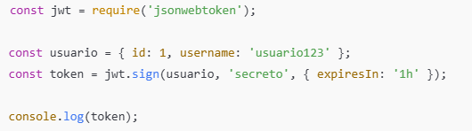
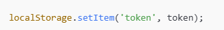
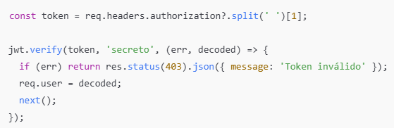
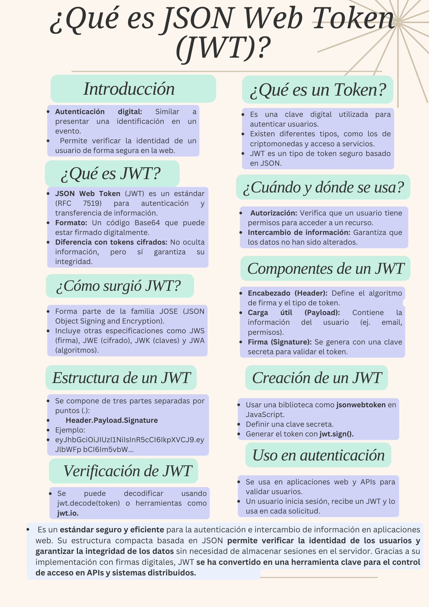

¿Qué es JWT?
JSON Web Token (JWT) es un estándar abierto (RFC 7519) que define un método compacto y
seguro para la transmisión de información entre partes en formato JSON. Estos tokens
son autovalidados, lo que significa que contienen toda la información necesaria para
verificar su autenticidad sin necesidad de consultar una base de datos.
¿Para qué sirven los JSON Web Tokens?
Los JWT se utilizan principalmente para:
✅ Autenticación: Permiten a los usuarios iniciar sesión una vez y utilizar el
mismo token en cada solicitud sin necesidad de volver a autenticarse.
✅ Autorización: Un backend puede verificar un token para conceder acceso a
ciertos recursos.
✅ Intercambio de información: Los JWT pueden ser utilizados para enviar información
entre partes de manera segura, ya que están firmados digitalmente.
Componentes de un JSON Web Token (JWT)
| Componente | Descripción | Ejemplo |
|---|---|---|
| Header (Encabezado) | Contiene el tipo de token y el algoritmo de firma utilizado. |
{ |
| Payload (Cuerpo o Datos) | Contiene los datos (claims) como la identidad del usuario y la fecha de expiración. |
{ |
| Signature (Firma) | Se genera codificando el Header y el Payload con una clave secreta. |
HMACSHA256( |
Beneficios y Consideraciones
✅ Ventajas
- Sin estado: No requiere que el servidor almacene sesiones.
- Seguridad: Se pueden usar firmas digitales para garantizar la autenticidad.
- Compacto: Su formato en Base64 lo hace ideal para transmisión en HTTP.
⚠️ Consideraciones
- No almacenar en localStorage si se trata de información sensible. Usa httpOnly cookies si es posible.
- Renovar tokens con refresh tokens en sesiones largas.
- Usar algoritmos seguros como RS256 en lugar de HS256 cuando sea posible.
¿Cómo se usan los JWT en una aplicación?
- Generación del tokenEl servidor emite un JWT cuando el usuario inicia sesión. Por ejemplo, en Node.js con jsonwebtoken: 
- Uso en el FrontendEl token se almacena en el cliente (por ejemplo, en localStorage o sessionStorage): 
- Validación en el BackendEl backend verifica el token antes de permitir el acceso: 
Luego, se envía en cada solicitud al backend mediante el encabezado Authorization:

Conclusión
JSON Web Tokens (JWT) son una solución eficiente y segura para la autenticación y autorización
en aplicaciones web y móviles. Su estructura compacta y autovalidada permite la transmisión de
información sin necesidad de almacenar sesiones en el servidor, lo que mejora el rendimiento y
escalabilidad.
Sin embargo, es crucial implementar buenas prácticas de seguridad, como el uso de algoritmos
robustos, la protección de claves secretas y el manejo adecuado de los tokens para evitar
vulnerabilidades como el robo de credenciales.
En definitiva, JWT es una herramienta poderosa para gestionar la identidad y el acceso a recursos,
siendo ampliamente utilizada en sistemas modernos que requieren autenticación basada en tokens.
Información Extra
